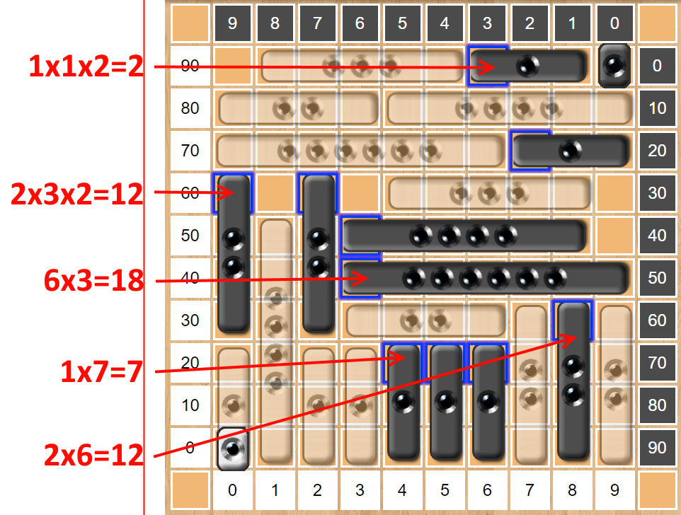

Isaac
Board Game Arena 官方规则文档
Goal
Two players try to get the highest score by first filling up a 10x10 board with their pieces and then score points by removing them.
Game play
The games has two phases: Placement and Scoring phase.
Placement phase
On an empty board starting with the black player players take turns placing one of their pieces on the board. The placement phase ends when no player has space to place any more pieces.
Scoring phase
Both players start with 0 points with their score marker starting on their 00 position of the board. If there is a piece there the score marker will start on top of it.
The player that passed first on the placement phase starts on the scoring phase. Players take turns removing a piece from the board and score it. The removed piece must be at least as long as the previous removed piece by the same player. e.q. if a player removes a 2-piece they cannot score a 1-piece any more. Players can also not remove a piece with any score marker currently on it.
- Count the total number of pieces left lying on or crossing the line from which the piece was removed;
- Multiply this number by the number written on the removed piece;
- If there is a single score counter (of either color) lying on this line then multiply the result by 2. If both score counters are lying on this line then multiply the result by 4;
After removing the piece the player may move their score marker from it's current position up to the scored amount of points. i.e. if their score marker is on 20 and they scored 15 points it can stay on 15 or be moved up to 35. It can be placed over any colored piece except another score marker.
Game End
The game ends when any player scores at least 100 points. If a player cannot remove any of their pieces on their turn, they pass and is out of the game. The game ends when both players have passed.
Tie
Each player forms a line with all their unplaced pieces and the player with the longest line wins the game. If this is still a tie the player that started the games (black) wins.
Scoring Examples
